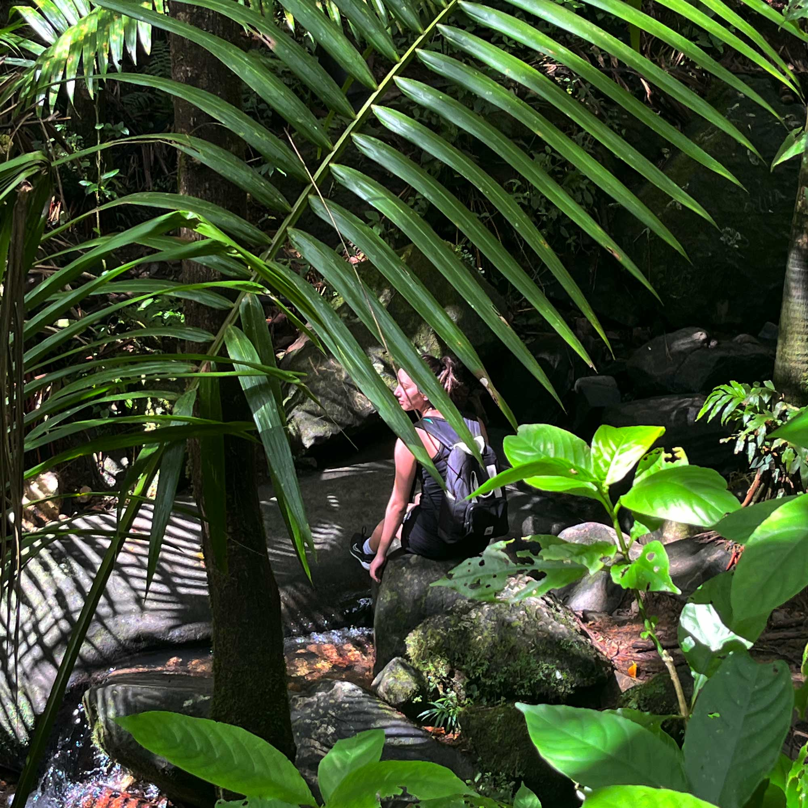

Hiking is a rewarding outdoor activity that benefits both the mind and body. It provides an excellent form of exercise, improving cardiovascular health, strengthening muscles, and increasing endurance. The varied terrain and natural obstacles engage different muscle groups, making it a full-body workout that is both challenging and enjoyable. Additionally, hiking allows individuals to disconnect from their daily routines, reducing stress and promoting mental clarity. Being in nature has been shown to lower cortisol levels, which can improve overall well-being and mood.
Beyond the physical benefits, hiking offers a unique opportunity to connect with nature and experience breathtaking landscapes. Whether traversing mountain trails, exploring dense forests, or walking along coastal paths, hikers are often rewarded with stunning views and encounters with wildlife. These moments encourage mindfulness, helping individuals appreciate their surroundings and feel a sense of calm. The ever-changing scenery and fresh air can be rejuvenating, offering a break from the fast-paced nature of everyday life.
Hiking can also be a social or solitary activity, depending on personal preference. Some enjoy the camaraderie of group hikes, sharing the experience with friends or meeting like-minded individuals on the trail. Others find solace in solo hikes, using the time for reflection and personal growth. Regardless of how one chooses to hike, it remains an accessible and fulfilling activity that promotes a healthier lifestyle while fostering a deeper appreciation for the natural world.